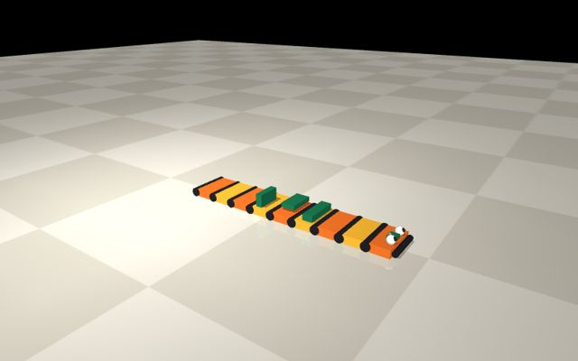
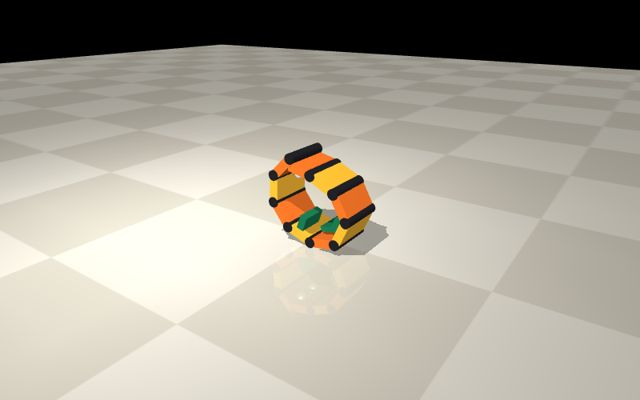
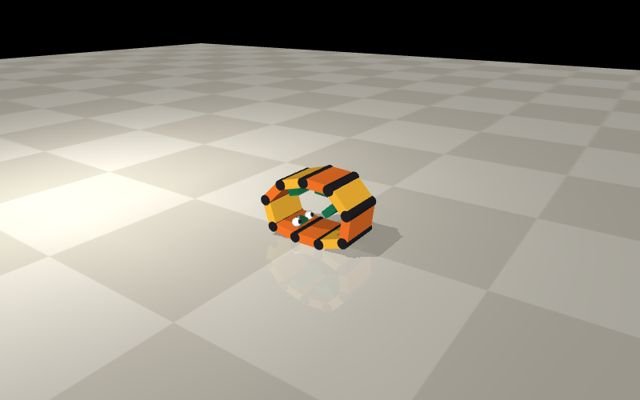

Ouro, the worm that bites its tail and rolls away
A flat strap of nine printed links and eight $3 hobby servos. It crawls like a caterpillar, rolls itself up, snaps its head onto its tail with magnets and becomes a wheel. You train it with reinforcement learning in MuJoCo on your laptop, then run it on the real robot.
This is a replay of the MuJoCo run, not a drawing of what it might do. The robot bends in one plane, so the side view is exact.
- Servos
- 8 × MG90S
- Mass
- 350 g
- Flat
- 432 × 80 × 16 mm
- As a wheel
- 140 mm
- Roll speed (sim)
- 38 cm/s
- Parts per robot
- about $87
The surprising moment, in three frames

Flat on the desk, 432 mm long.

Both ends lifting, tips first.

Head on tail, magnets shut, rolling as a 140 mm wheel.
Ouro is a flat strap of nine printed links joined by eight MG90S servos, all bending in the same plane. Lying on the desk it is 432 mm long, 80 mm wide and 16 mm thick, about 350 g, and it looks like a watch strap or a piece of tank track with two googly eyes at one end. No chassis, no legs, no wheels.
Then it moves. It crawls forward like a caterpillar, stops, rolls itself up from both ends, snaps its head onto its tail with magnets and becomes a 140 mm wheel that rolls away by reshaping itself. Tap it and the wheel bursts open and flops flat. Nobody looking at the strap expects the wheel.
Your first 30 seconds with a finished robot. Power on and run python play_gait.py PORT wave 6: a hump travels down the strap and it creeps forward. Run cobra and the front three links rear up and nod. Run bite and it curls up and clicks shut. Then you find out the scripted bite only works on a little over half of all builds (36 of 60 randomised builds in sim). Getting from there to a bite and a roll that work every time is what the rest of the project teaches.
What you will learn by building it.
- Mechanical design with compliance: printed leaf springs, backlash and magnets as features rather than flaws.
- Electronics: a 2S LiPo power system, two buck converters, I2C sensors and a wireless ESP-NOW link.
- Simulation: a MuJoCo model of cheap servos that behaves as badly as the real ones.
- Reinforcement learning: writing observations and rewards, training PPO, and evaluating over many randomised robots.
- Sim to real: calibration, system identification and running a trained policy on hardware.
Why this body works with cheap servos. A closed loop of eight position servos is over-constrained: the eight commanded angles almost never agree with a closed shape, so stiff, accurate servos would fight each other to a stall. Ouro works because nothing in it is stiff or accurate. Every link has a 1 mm printed leaf spring in series with its servo, the gears have a few degrees of backlash, and the magnets capture from about 10 mm away. The slop is the tolerance that lets the loop close.
What it cannot do: steer. Every joint axis is parallel, so it lives on a line. The Limits page covers this and the other trade-offs.
Three behaviours
1. Beginner: the caterpillar and the cobra. Two hand-written functions in gaits.py, no training. wave sends a hump from tail to head: 19 cm in 6 s in sim at about 1.8 A. cobra rears the front three links to put the eyes almost 10 cm off the desk and nods. You run them on screen in session 2 and on the desk in session 10, and they show that a gait is a function of time and that the same function runs in MuJoCo and on the robot.
2. Real RL: the wheel. Latched into a 9-gon, the robot has to roll by continuously changing its shape so that its centre of mass stays ahead of its contact point. It does this with two IMUs and a current reading, with joints it cannot see, without pulling its own magnets apart. There is no hand-written roll in the project: keeping a wheel rolling across slightly different builds is the job the policy learns. The trained policy rolls 3.04 m in 8 s on average across 60 randomised builds and never bursts.
3. The demo video: the full ouroboros. Crawl in from the left, stop, roll up tips first, bite, roll away as a wheel, then get tapped on the desk and burst open flat. The bite is a trained policy (60 of 60 randomised builds, against 36 of 60 for the script). The startle is a 0.6 s hand-written move: three joints at each end curl hard and the middle two bend backward, which pulls the pins straight out of the cradle. In sim it opens the latch on 30 of 30 resting wheels, with the end stops giving it something to pull against. The tap is detected on the computer as a spike in the mid IMU's accelerometer. demo.py plays the whole chain.